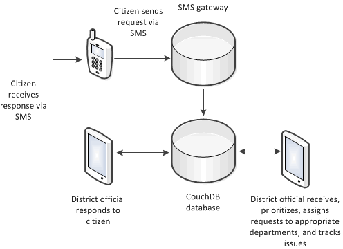
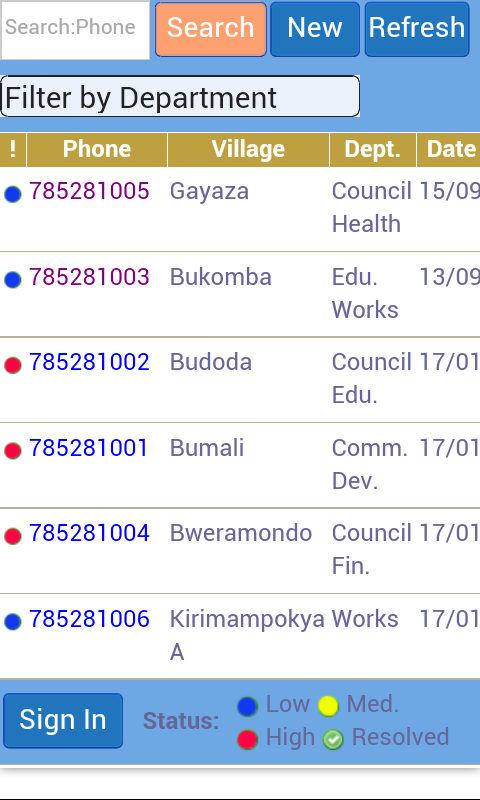
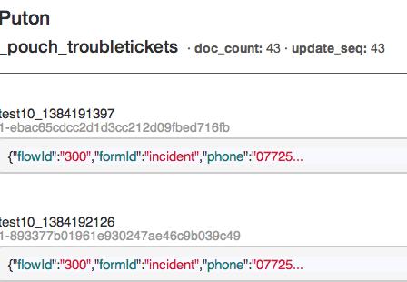
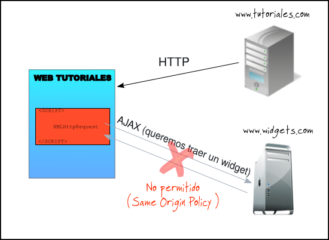

Using PouchDB for PhoneGap/Cordova apps
Chris Kelley
chrisekelley
on github and twitter.
UBridge: SMS -> Couch on Android in Uganda
UBridge diagram
UBridge
Hosting Criteria
- Reliability
- Sustainability - Reduce monthly data costs
Hosting
- Iriscouch - CORS support
- Cloudant - BYO reverse proxy
- Urban Airship - Notifications
This is an HTML5 App Using
- Apache CouchDB - server
- PouchDB - local DB
- Phonegap/Cordova 3.x - container
- Backbone.js - MVC
- Backbone-pouch.js - DB connector
- Coconut - Form rendering
Mobile Platform & Devices
- Android
- Samsung Galaxy Tab 1 & 2
- Huawei Ascend Y300
Why PouchDB?
Development Approach
2 projects
- *** Web app ***
- Android app
Building the Android app
build.sh
grunt cordova-build
adb uninstall org.rti.olutindo_app
adb install -r platforms/android/bin/Olutindo-debug.apk
Transitioning TouchDB to PouchDB
Converting CouchDB Views
Created pouchdb_views.js and named each query:
var byIncidentSorted = function(doc) {
if (doc.formId === "incident") {
emit(doc.lastModified, doc);
}
}
var bySearchKeywords = function(doc) {
if(doc.phone) {
emit(doc.phone, doc);
}
}
PouchDB Query Example
searchResults.fetch(
{fetch: 'query',
options: {
query: {
fun:bySearchKeywords,
key:searchTerm
}
},
success: function(collection, response, options) {
FORMY.Incidents = searchResults;
var page = new Page();
var Home = new HomeView(
{model: page, el: $("#homePageView")});
}}
);
PouchDB Query Examples
Fetch
var record = new Incident({_id: incidentId});
record.fetch( {
success: function(model){
// do something
});
}
});Save
var record = new Record(formData);
record.save();
Does it really have IndexedDB?
var ua = navigator.userAgent;
var is412 = ua.indexOf("4.1.2");
var isGTP6200 = ua.indexOf("GT-P6200");
if ((is412) && (isGTP6200))
{
Backbone.sync = BackbonePouch.sync({
db: PouchDB('websql://troubletickets')
});
} else {
Backbone.sync = BackbonePouch.sync({
db: PouchDB('troubletickets')
});
}
Pagination
Use endkey instead of startkey for descending order.
var opts = {
query: {
fun: {map: byIncidentSorted}
, descending:true
, endkey:parseInt(endkey)
, limit:limit
}
}
Replication
CouchDB
var credentials = account.username + ":" + account.password;
couch = "http://" + credentials + "@192.168.1.60:5984/" + couchdb + "/";
var opts = {continuous: true,
withCredentials:true,
auth: {username:account.username, password:account.password},
complete: onComplete,
timeout: 60000};
Backbone.sync.defaults.db.replicate.to(couch, opts, ReplicationErrorLog);
Backbone.sync.defaults.db.replicate.from(couch, opts, ReplicationErrorLog);
Developing with PouchDB
- Dev Tools -> Resources -> IndexedDB
- Removing the pouch
indexedDB.deleteDatabase('_pouch_troubletickets');
Puton

Development Issue
CORS: Cross-origin resource sharing
(bypass same origin security policy)
Where to enable CORS?
Cloudant needs CORS.
- Cordova fine - same origin security policy disabled
- For browser dev, must enable CORS
CORS solution:
Using express for dev + request to reverse proxy replication
app.js for express:
var forward = require('./forward.js');
//typical static express config
app.use(express.static(__dirname + '../../www'));
var target_url = "cloudant.com/troubletickets"
app.use(forward(/\/troubletickets\/(.*)/, target_url));
CORS solution:
Using express + request to reverse proxy replication
forward.js:
if(req.url.match(pattern)){
var db_path = req.url.match(pattern)[1], parts = db_path.split("/");
var subdomain = parts[0], credentials = parts[1];
var query = parts[2];
var db_url = "https://" + credentials + "@" + subdomain
+ "." + host + "/" + query
req.pipe(request[req.method.toLowerCase()](db_url)).pipe(res);
}else{
next();
}
CORS solution:
Replication
var remoteCouch = "http://localhost:3000/troubletickets/"
+ subdomain + "/" + credentials;
if (navigator.userAgent.match(/(iPhone|Android)/)) {
remoteCouch = "https://" + credentials + "@" + subdomain
+ ".cloudant.com/troubletickets/";
}
Backbone.sync.defaults.db.replicate.to(couch, opts, ReplicationErrorLog);
Backbone.sync.defaults.db.replicate.from(couch, opts, ReplicationErrorLog);
Using Cordova
Do enough plugins support Cordova 3.0?
Plugins i'm using
- Version
- WebIntent
- Urban Airship PushNotification
- file-transfer
- SMS
- Prefs
Adding a plugin
cordova plugin add https://github.com/urbanairship/phonegap-ua-push.git
Handling plugins
Load Cordova .js in Cordova only.
if (navigator.useragent.match(/(iPhone|iPod|iPad|Android|BlackBerry|IEMobile)/)) {
loadScript('cordova.js');
loadScript('version.js');
loadScript('sms.js');
loadScript('js/PushNotification.js');
}Handling plugins
Find plugin instance in plugin.xml<js-module src="www/sms.js" name="Sms">
<clobbers target="window.sms" />
</js-module>
<js-module src="www/sms.js" name="Sms"> <clobbers target="window.sms" /> </js-module>
Testing for plugin instanceif (typeof window.sms != 'undefined') {
// code
}
if (typeof window.sms != 'undefined') {
// code
}Notifications using PushNotification
Urban Airship
Lower data costs: switch from continuous replication by using notifications
Thanks!
Thanks for bespoke.js:
@markdalgleish